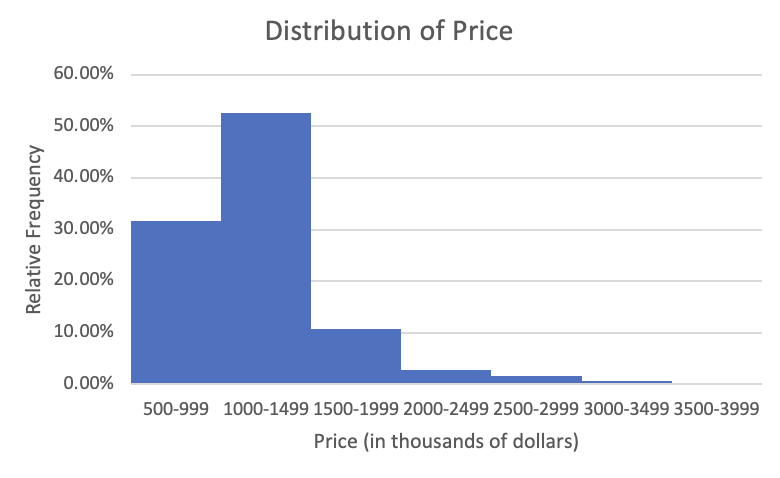
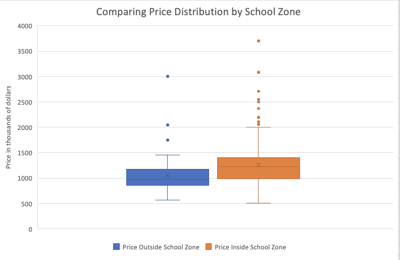

24 November 2026
Business question → method → Excel → validation → plain-language conclusion
Across the eight weeks, you will learn to:
Explanation and supervised Excel practice are integrated in one class. Bring desktop Excel and your own working copy of the weekly workbook.
Check Moodle for submission and examination arrangements.
How can a business turn a worksheet of observations into a defensible data story?
ETF defines business statistics as the application of statistical tools and methods to analyse data for evidence-based business decisions.
A business question comes first. For example: Do property prices differ between homes inside and outside a school zone? The answer needs a clear unit, a relevant population, useful measurements and a conclusion with limitations.
In the RealEstate sheet of the Week 1 workbook, one row is one property. Price ($000s), Beds, SchoolZone and Auction are variables. A price of 1100 means AUD 1.1 million.
A mean calculated from 329 sampled properties is a statistic. It is evidence about a population mean only if the sample and population are defined and the sampling process is credible.
| What we do | Purpose | Example |
|---|---|---|
| Describe | Collect, summarise and present observed data | Report the sample median price and a box plot |
| Infer | Use sample data to draw a conclusion about a population | Estimate the population mean price |
Today we build the description. Weeks 3–4 use sampling to quantify the uncertainty in inference.
| Type | Meaning | Example | First chart choice |
|---|---|---|---|
| Nominal categorical | Labels without an order | Auction Yes/No |
Bar chart |
| Ordinal categorical | Labels with an order | Poor/Fair/Good | Ordered bar chart |
| Discrete numerical | A count | Beds |
Bar chart |
| Continuous numerical | A measurement | Price ($000s) |
Histogram or box plot |
Cross-sectional data describe different units at a time; time-series data follow a quantity through time. Put time on the horizontal axis of a line chart.
Open RealEstate. Ask for each column:
Beds is a count even though Excel stores it as a number. SchoolZone is categorical even if we later encode Yes and No as 1 and 0.
Open Stores. Identify the observational unit, the type of Sales, Profit and Open 24 Hrs?, and one sensible chart for each. State a possible population before you discuss inference.
ETF’s Excel introduction starts with three rules:
B2.=; for example, =C2/B2.B2:B76.Functions such as =AVERAGE(B2:B76), =COUNTIF(D2:D76,"Yes") and =STDEV.S(B2:B76) calculate summaries. Check that each range contains the intended records.
In Stores, Sales is column B and Profit is column C. Put Profit margin in a blank column and enter =C2/B2 for the first store. Format as a percentage, fill down and inspect the last row.
A rate has a numerator, denominator and meaning. Profit/Sales answers a different question from profit in dollars. Keep the original data and the formula visible.
Calculate the profit margin for every store. Identify a store with high profit in dollars and a store with high profit margin. Write one sentence explaining why the rankings can differ.
COUNTIF and COUNTIFS provide an independent check of a count.The Excel work should follow the question: choose a numerator, choose the right denominator, then calculate and label the result.
A frequency is a count. A relative frequency is that count divided by the relevant total.
For a chart of Auction by Yes/No, each bar can show either a count or a percentage of all sampled properties. For a comparison within school-zone groups, divide by each group’s number of properties. State the denominator in the title or note.
ETF Seminar Week 2 demonstrates this sequence with Real Estate data:
RealEstate table and choose Insert > PivotTable.Auction to Rows and Values; summarise Values by Count.A bar chart compares categories. A pie chart can show shares of one whole, but grouped bars make two model or customer groups easier to compare.
Use a PivotTable to compare the within-group Auction rate for SchoolZone = Yes and No. Make a labelled bar chart in Excel. Audit one bar with COUNTIFS divided by the correct group total, then explain the comparison without claiming causation.
The ETF visualisation lecture asks whether a nonexpert can understand the graph. Check:
A clear chart still needs a sentence stating its main pattern and a limitation.
Numerical description has three parts:
ETF Seminar Week 4 uses all three when comparing house prices by school zone. A chart shows features a single average can hide.
=AVERAGE(range). It uses every value and is affected by extreme prices.=MEDIAN(range). Half the values are at or below it.=MODE.SNGL(range). For prices with few repeats, a modal interval in a histogram is often more useful.If a few very expensive houses pull the mean above the median, describe the distribution as right-skewed before choosing the headline statistic.
The sample standard deviation measures how observations vary around the sample mean: =STDEV.S(range). It uses all values but responds to outliers.
The interquartile range is IQR = Q3 - Q1, the spread of the middle 50%. Use =QUARTILE.EXC(range,1) and =QUARTILE.EXC(range,3) for the ETF convention, and label that choice. Excel also has QUARTILE.INC; use one convention consistently.
The range, MAX - MIN, relies only on the two extremes. Give units for every spread statistic.
A histogram groups a continuous variable into adjacent intervals. Its bars touch, and their pattern can reveal skewness, a long tail or unusual values. ETF groups Real Estate prices in AUD 500,000 bins, then sets the chart’s gap width to zero.

ETF Real Estate price histogram. The data are grouped into equal-width price bins.
The box spans Q1 to Q3, with the median inside. Whiskers and separate points show the range and unusual values under Excel’s box-plot rule. A side-by-side box plot compares centre, spread and outliers on one scale.

ETF comparison of property-price distributions inside and outside a school zone.
In RealEstate, compare Price ($000s) for SchoolZone Yes and No. ETF Workshop Week 4 uses Data > Data Analysis > Descriptive Statistics for mean, median and sample standard deviation. Add Q1 and Q3 with formulas.
For the chart, put the two price groups in adjacent columns with clear headers, then choose Insert > Statistical Chart > Box & Whisker. Label the vertical axis Price (AUD thousands). The ToolPak provides summaries; the ordinary Excel chart displays the distribution.
Compare price for New = Yes and No. Produce a small table of COUNT, AVERAGE, MEDIAN, STDEV.S, Q1 and Q3, then make a side-by-side box plot. Which group has the higher typical price? Which has more spread? Identify one visible limitation.
A business data story has a repeatable order:
Question → unit and population → chart and numerical summary → check → plain-language claim → limitation.
For the school-zone comparison, a higher sample median is a description of the observed properties. It does not by itself show that school-zone status caused the price difference; property size and location may also matter.
Create a compact panel for the Real Estate question with one labelled categorical chart, one numerical distribution chart, two summary numbers and a two-sentence conclusion. Make the Excel working auditable from raw rows to chart.
The Stores sheet also supports ETF Workshop Week 1 practice with VLOOKUP, INDEX/MATCH, IF, IFERROR, filters, COUNTIF and SUMIF. Use these when a business question needs a lookup or conditional summary. They are useful tools, but the core Week 1 story is choosing, constructing and interpreting summaries and charts.